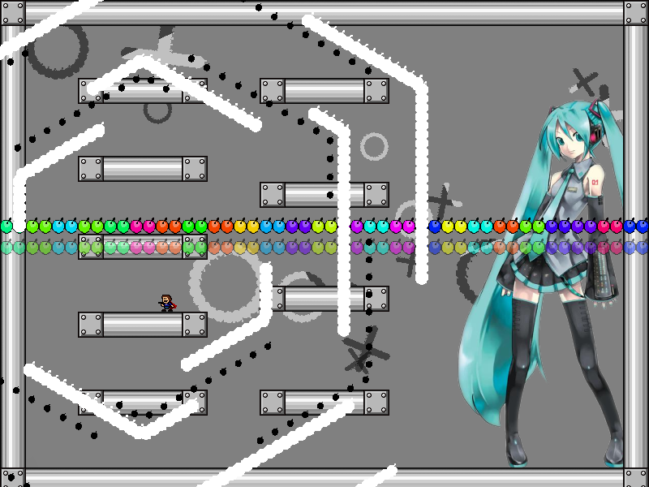
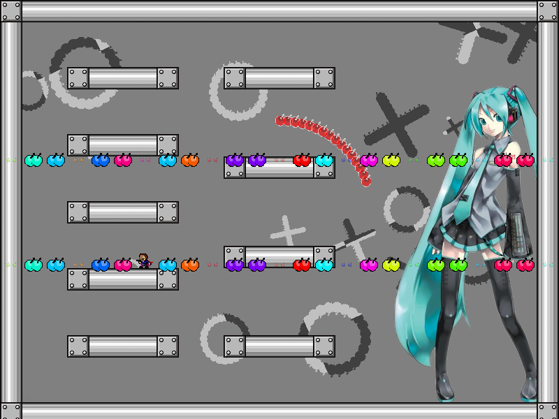
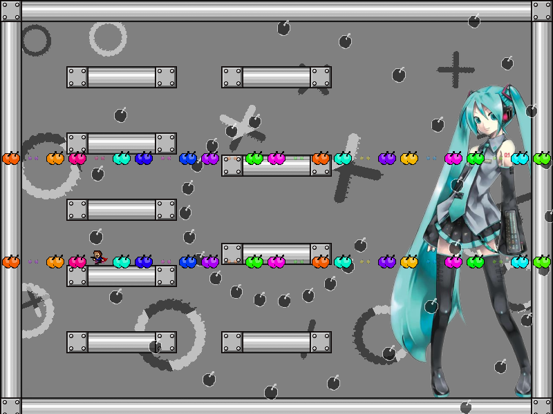

chapter6 - section2

| creator | segment | label | jump |
|---|---|---|---|
| NN | 1:16.80~1:19.90 | Q+R*A*S/Q/Q/Q | double |
色相を題材とした択一型の弾幕です。
棒状弾幕を構成する弾の色に関して、これらは1:16.40以降各時刻において列ごとに一定の変化量を伴って色相環に従い変化します（fig.6-2.1）。
列ごとに決まった単位時間あたりの色相変化量について、その大きさの順番を見極めることを目的としています。

各列における色の変化に関して、色相が1周する周期について最も短い列が1番目の正解、2番目に短い列が2番目の正解、最も長い列が3番目の正解にそれぞれ対応しています（fig.6-2.2.a~fig.6-2.2.c）。


